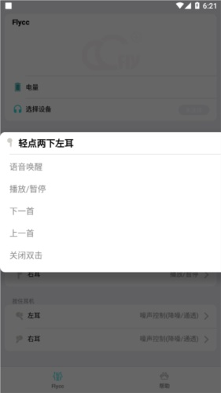
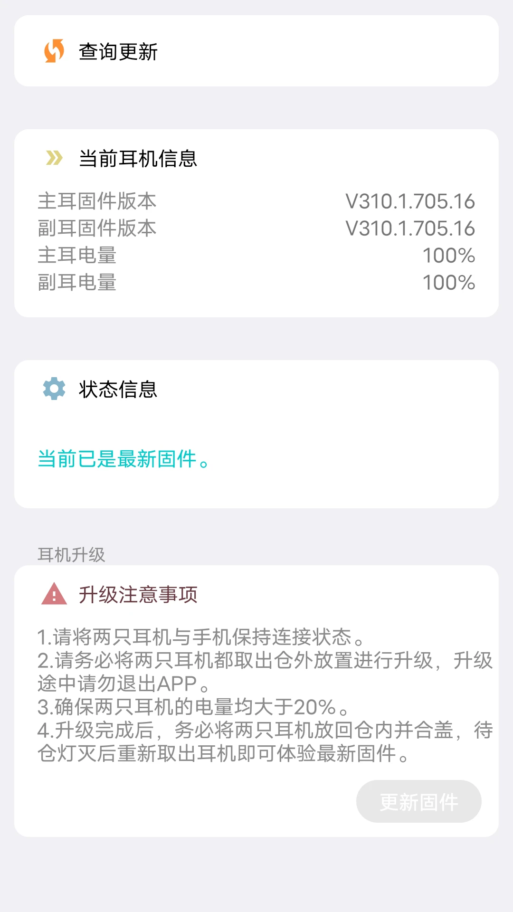

Flycc 到底值不值得掏钱？一笔算得明白的时间账
从悦虎耳机芯片档位到 Flycc 能解锁的功能边界，按使用强度拆成三类人算清楚：这 App 该不该付、付了能省多少时间、不付有没有替代路。
它到底值不值得掏钱？
这是我对着手里那颗 1562AE 芯片的五代耳机，连续问了自己三天的问题。
Flycc 是悦虎方案耳机的配套管理工具，连上之后能调手势、刷固件、切一拖二、开空间音频——功能很多，它的官网上列了目前支持的所有型号清单，但悦虎耳机本身几百块，再花一份钱在配套 App 上，总觉得哪里不对。我试着把能查到的所有功能和门槛整理了一遍，算一笔实打实的账。

先搞清楚你手上的耳机是哪档
Flycc 能解锁什么功能，不取决于你说自己是"几代耳机"，而取决于耳机主板上焊的那颗络达芯片。同一代次的名号下藏着三档不同的芯片，能玩到的功能天差地别。
简单列一下市面上最常见的对应关系：
- 入门档 1563E：价格最低，通常只有基础功能，没有空间音频，一拖二能不能支持要看固件。
- 主流档 1562AE：性价比之选，一拖二稳有，降噪能调，空间音频看固件。
- 旗舰档 1571AM：真正的顶配，一拖三设备切换、自适应降噪、空间音频、心率监测——这颗芯片才是 Flycc 功能的全开档。
拿不准自己耳机是哪颗芯片？连上 App 一看便知——界面左上角直接显示型号。连不上的话，先确认是不是老固件的问题，二代耳机 151 版本之前出厂的那批根本没有通信接口，App 握手直接失败，得手动刷固件才能救回来。
定价拆解：免费版给什么，付费版多什么
Flycc 的免费版其实已经覆盖了大部分日常使用场景——连上耳机之后，基础的手势自定义（轻点两下、按住耳机绑动作）、通话设置、固件 OTA 升级这些最常用的功能全都是免费用，直接从下载页拿就行。对于"能连上、能听到、能接电话"这个最基本的使用需求，免费版绰绰有余。
付费版真正解锁的，是那些只有旗舰芯片才有的高级功能开关，以及部分高级音效和 EQ 调节。说白了，如果你手上是 1563E 或 1562AE 档位的耳机，很多付费功能你的硬件根本不支持——这钱花出去就是浪费。1571AM 的用户才是付费版的目标群体，旗舰芯片的硬件规格撑得起那些高级功能。
分三类人算账
轻度用户：耳机就是用来听歌的
每天通勤路上用一两个小时，回家放着不碰。手势用默认的、音量手机上拧、固件更不更新随缘——对这类人来说，免费版完全够用。唯一可能让你心动的付费功能是 EQ 音效调节，但手机自带的 EQ 或者音乐播放器里的均衡器也能凑合用，省下来的时间几乎为零。
结论：不用付。 省下这笔钱，不如给耳机换副好点的耳塞套，对听感的提升比 App 里调几个参数明显得多。
主力用户：每天戴四五个小时，多设备切换
通勤加办公，手上一台手机一台笔记本，经常需要来回切音频。这时候一拖二的无缝切换就是刚需——没有这个功能的话，每次切换都要手动断开重连，一天至少浪费三四分钟，一年下来就是二十多个小时。
但这里有个关键细节：一拖二本身是芯片硬件能力，免费版就能开。付费版多出来的是切换逻辑的细调，比如"某设备来电自动切过去"这种自动化规则，有用但不是刚需。

结论：先免费用一个月。 如果发现自己每天真的要频繁切换设备、而且默认的切换逻辑让你反复手动干预，再考虑付。一个月用下来没觉得烦，那就不值得花。
重度用户：旗舰芯片 + 折腾党
1571AM 芯片、一拖三、空间音频、自适应降噪、心率监测全开。你会研究每个手势绑定什么动作、会对比不同 EQ 预设的听感差异、会跟进每次固件更新带来了什么新功能。对这类人来说，付费版的高级功能不是锦上添花，是把耳机的硬件潜力彻底榨干的必要工具。
算笔时间账：假设你每周花两小时折腾耳机设置、对比功能差异，付费版帮你省掉的翻文档找参数、手动切换调试的时间——真要深挖每个手势的绑法和芯片差异，去flycc文档能省不少瞎试的时间——一年下来少说也有十小时。按你的时薪换算，这钱花得值不值自己算。
结论：闭眼付。 但前提是你真的是重度折腾党——别为了"支持一下开发者"就冲动，开发者靠的是真实的使用场景。
不付这笔钱还有什么别的路
其实大多数功能都有替代方案：
- 手势自定义：部分耳机固件本身就内置了手势设置入口，不用走 Flycc。
- 固件升级：如果你的耳机在官方渠道能直接 OTA，Flycc 的固件通道就是多此一举。
- EQ 调节：手机系统自带的均衡器、第三方音乐 App 的 EQ 设置，在日常使用中差异很小。
- 多设备切换：蓝牙本身的跨设备切换协议在改善，虽然现在还不如 Flycc 丝滑，但凑合能用。
唯一没有替代的就是那几个旗舰芯片专属的高级功能开关——自适应降噪模式、空间音频的精细调节、心率监测的同步。这些是硬件+软件联动的结果，绕不开 Flycc。
最后说一句
我自己最后没付。耳机是 1562AE 档位，免费版能用的功能已经覆盖了我所有日常场景，一拖二默认逻辑够用、手势绑完就不动了、EQ 用网易云自带的。省下的那笔钱给手机换了块电池，体感提升明显得多。
但如果你是 1571AM 旗舰芯片的用户，而且真的每天花时间折腾这些功能，那付费版的价值就摆在这里——别跟自己较劲，能节省时间的工具就值得掏钱。最后说句题外话，这套资料和固件包我在GitHub、Gitee、GitCode三处都留了镜像，某个仓库访问不了的话换一个就行。